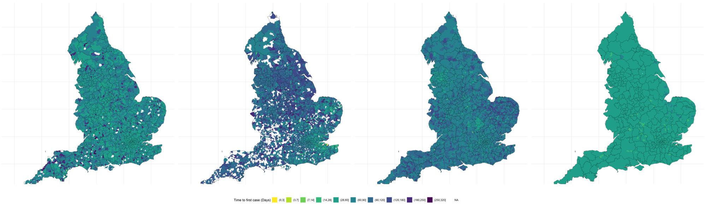

Response to the emerging Omicron variant of SARS-CoV-2.
My role was to develop the system and maintain a linelist of cases suspected to be caused by this new variant and to provide epidemiological data in real time to guide the public health response to this rapidly changing landscape. With previous variants that became widespread, Alpha and Delta introduction of cases typically occurred at periods of low levels of underlying transmission (due to behavioural interventions such as lockdowns and travel restrictions), this was not the case with Omicron where introduction occurred in the setting of high levels of community transmission. This made it more challenging to monitor changing case patterns and to evaluate suitable responses.
Fortunately, UKHSA had a well developed laboratory network for both community and hospital acquired samples with PCR kits that were able to identify the SGTF feature of Omicron against a background of the dominant variant (Delta) that did not have SGTF. This allowed us to perform real time surveillance of the expanding number of cases and geographic expansion following introduction of the variant.
The primary concern was that vaccines may be less effective against Omicron than they would be against other variants. We also were involved in work comparing the transmissibility of Omicron against Delta using national surveillance data.
Vaccine effectiveness
Following the emergence and rapid spread of the Omicron (B.1.1.529) variant of SARS-CoV-2 there was substantial interest in the effectiveness of current vaccines. A test-negative case-control design was used to estimate vaccine effectiveness against symptomatic disease compared to the previously circulating Delta (B.1.617.2) variant. We observed that primary vaccination with ChAdOx1 nCoV-19 or BNT162b2 vaccine provided limited protection against symptomatic disease. Booster vaccination following a completed primary course increased protection, but protection waned over time [@andrews_covid-19_2022]. This work has been published in the New England Journal of Medicine
Variant detection
Within UKHSA we were fortunate that we could monitor the emergence of Omicron against the background of the prior Delta wave. This was possible as many of the laboratories conducting surveillance were able to detect S-gene target failure allowing differentiation between Omicron and Delta. This led to rapid identification of possible Omicron cases, alongside real-time surveillance and modelling of Omicron growth. This was key to initial public health action (including case identification and incident management), and we share applied insights on how and when these surveillance approaches can inform public health interventions[@blomquist_enhancing_2022]. This work has been published in Eurosurveillance.
Comparing transmission of Omicron and Delta
This epidemiological study assessed differences in transmissibility between the Omicron and Delta. We used contact tracing data alongside national surveillance to estimate the transmission parameters. We found that the proportion of index cases resulting in a cluster of transmission was twice as high for Omicron (16.1%) compared to Delta (7.3%). Our study identified increased risk of onward transmission of Omicron, consistent with its successful global displacement of Delta [@allen_comparative_2022]. This work is currently registered as a pre-print on MedRxiv
Evaluating the effect of travel restrictions on the transmission of imported variants
A piece of ongoing work is assessing the rate of geographic spread of SARS-CoV-2 variants across the UK following introduction. We are interested in comparing the speed of this initial spread taking into account the underlying transmission dynamics at the time to evaluate the effectiveness of implementing travel bans once a variant has been detected.
